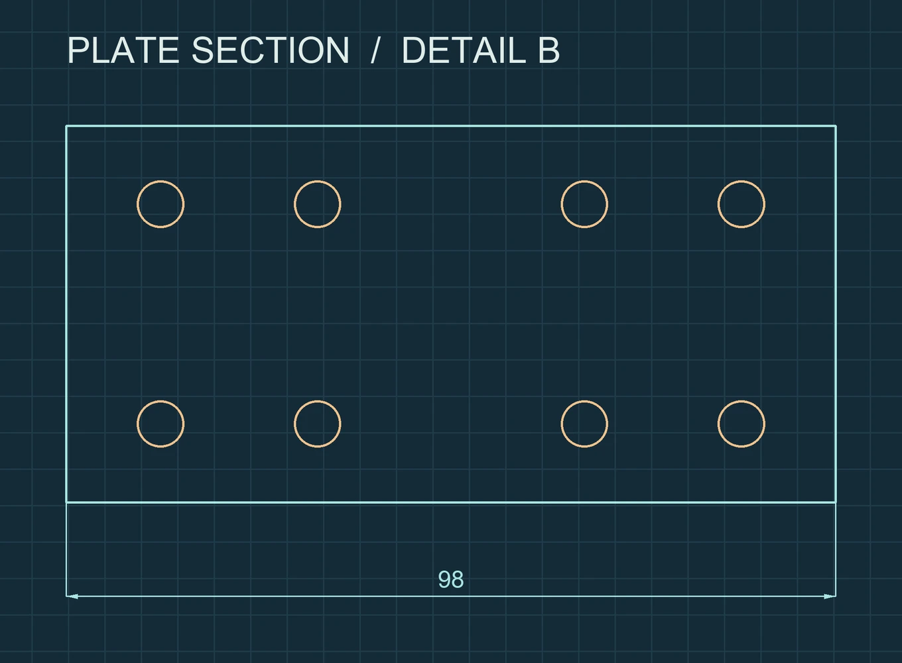

← 全部作品／ 空間與模型



交付成果設計要求 → 可比對詳圖
ENGINEERING NOTES
我怎樣做
盲測中的版本記錄能分辨哪些內容在比對前已完成。
整理要求
先列圖面格式和需核對的設計項目。
固定版本
在比對前凍結試作，以 SHA-256 記錄當時版本。
核對差異
對照已批准圖則，把差異交給工程師審閱。
- progeCAD
- AI Skills
- SHA-256

ENGINEERING NOTES
盲測中的版本記錄能分辨哪些內容在比對前已完成。
先列圖面格式和需核對的設計項目。
在比對前凍結試作，以 SHA-256 記錄當時版本。
對照已批准圖則，把差異交給工程師審閱。